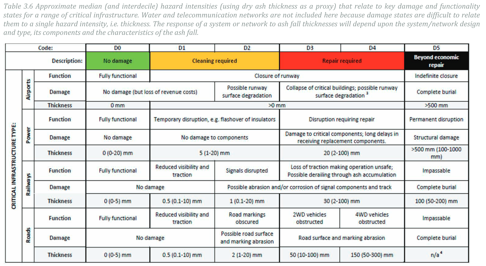
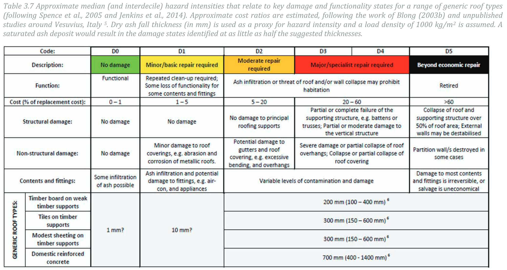
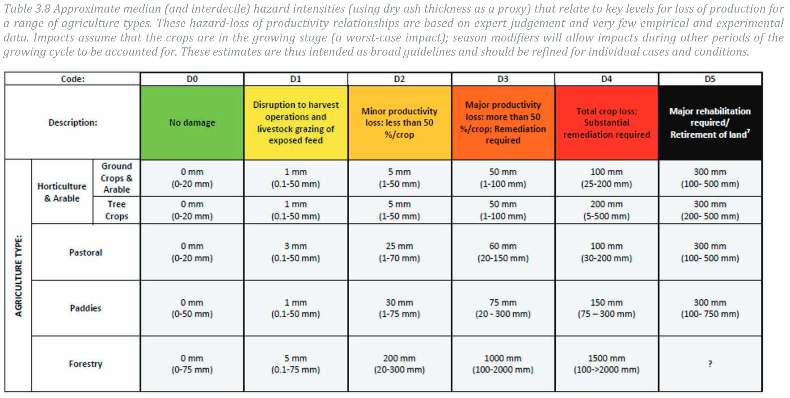

Probabilistic tephra hazard assessment
Tephra describes all fragments of rocks of any size or composition that are injected into the atmosphere during explosive volcanic eruptions. Although tephra is not one of the main causes of casualties in the context of volcanic crisis (tephra are responsible for only 2% of all volcano-related deaths), it can cover wide areas and disrupt a broad range of socio-economic activities. Examples are health problems, collapse of roofs, death of vegetation, blockage of roads and disruption of airports and air traffic. Some hazardous tephra thresholds are shown in the table below. These ranges are wide due to the range of typologies of crops, vegetation, buildings that can be impacted, as well as external factors (e.g. time of the year for crops). Refer to the references provided in the previous lesson for more information on how to quantify physical vulnerability to tephra fallout.
| Element | Threshold (\(kg/m^{2}\)) |
|---|---|
| Airport closure | 1 |
| Perturbation of the road network | 1-100 |
| Impact on crops | 5-150 |
| Impact on vegetation | 5-1500 |
| Roof collapse | 100-300 |
Objectives
The aim of this exercise is to compile a probabilistic hazard assessment for tephra accumulation for a future eruption at La Palma. Probabilistic modeling will be performed using the model Tephra21 and the Matlab toolbox TephraProb2.
In this exercise, you will use the user-friendly Matlab toolbox called TephraProb to:
- Analyse the eruptive record and perform some basic frequency analyses.
- Analyse the wind patterns in a region and put this in the perspective of the hazard assessment.
Running the full workflow for probabilistic hazard assessment in the computer lab is complicated by technical issues (e.g., computation time, compilation of source libraries). Therefore, we have already ran the scenario for you. You will nevertheless:
- Learn how to interpret the sampling of ESP.
- Analyse the hazard outputs.
TephraProb
For more information about TephraProb, you can refer to the:
- Video tutorial.
- Updates on the code's website.
Getting started
Setup TephraProb
The VolcanicRisk2022.zip located on Moodle contains folder named TephraProb, which we will use throughout the exercise.
- Start
Matlab. If your computer has several versions, use the latest one. - Left of the address bar at the top of the main
Matlabwindow, click on the iconBrowse for Folderand navigate to the location ofTephraProb(i.e. the location of the filetephraProb.m). - In the Matlab command line, type
TephraProband press enter to startTephraProb.
Use your user disk!
If you are using the PC of the computer lab, make sure your files are saved on your personal drive! This is typically the H:\ drive. Otherwise, your files will be deleted every time you logout!
Hazard assessment
This exercise is structured in 4 parts:
- Analysing the eruptive record of La Palma using the GVP database.
- Analysing wind patterns at la Palma using the EMCWF ERA-5 database.
- Defining an eruption scenario and associated ESP.
- Analysing the hazard output.
Eruption history
As already introduced, the GVP database compiles the eruptive history of Holocene volcanoes based on their VEI. Each volcano is identified by an id, which is 383010 for La Palma. Let's have a look at the eruptive history of La Palma based on the GVP database.
- On the main
TephraProbwindow, clickInput>GVP. - Enter the
id, clickAccessand wait a few seconds. - This first plot is a histogram showing the frequency of occurrence of each VEI. This is not super informative for La Palma, so change the
Plot typetoCumulativeand click thePlotbutton. - This new plot shows the cumulative number of eruption through time, colour-coded by the VEI.
Reading between the lines...
The GVP database is incredibly useful but, since based on the VEI, shares similar strengths and weaknesses previously discussed. Namely, the VEI works best for large, explosive eruptions, but not that well for eruption in the smaller spectrum of explosive styles such as those in La Palma. When thinking about the GVP data, bear in mind:
- The 2021 eruption is reported as
UndefinedVEI because no article reporting it has yet been published. However, we know it was a VEI 3 eruption. - In the GVP, eruptions that have been identified as having an explosive component but for which no tephra volume are reported are assigned a default VEI of 22. This is probably why most eruptions for la Palma are reported as VEI 2.
- Conversely, eruptions for which no explosive component was identified in the field are reported with an
undefinedVEI. This might indicate that no tephra was produced or, more likely, that it was eroded.
Question 1: Eruptive history
- On the cumulative GVP plot, what does the slope of the plot (i.e., the ratio of
ytox) represent? - How does it vary in time, and how do you explain it?
- What is the annual frequency of eruption for the recent history?
VEI and plume height
The VEI scale suggests very approximative indications of plume height for each VEI class. For instance, it suggests heights of 1-5 km for VEI 2 and 3-15 km for VEI 3 eruptions. However, the VEI scale does not include any information about intensity of the eruption (→ duration over which the VEI volume was erupted).
The volume associated with the 2021 VEI 3 eruption was erupted over the course of a few months, but plume heights were in the 1-5 km range rather than the 3-15 km range. Therefore, let's consider here the following plume heights:
- VEI 2: 1-5 km.
- VEI 3 - low intensity: 1-5 km.
- VEI 3 - hight intensity: 3-15 km (→ intense eruption lasting for hours).
Wind data analysis
In order to take into account the aleatoric variability of atmospheric conditions in the hazard assessment, a large population of wind profiles is required from which a different wind profile is randomly sampled at each model run. The atmospheric database used here is the EMCWF ERA-5 database.
Downloading atmospheric data takes time - we have therefore already prepared the dataset for you. The dataset contains 5 years of wind for the period 2017-2021, providing 4 wind profiles per day at a resolution of 0.25 degrees above La Palma.
Wind population
For the purpose of the exercise, we are using 5 years of wind data, which facilitates transfer and speed up analyses. Keep in mind that we usually use larger populations for real applications (typically more than 10 years depending on the variability in a given region).
Analysing wind patterns
You can now display wind profiles. Keep your eyes opened for seasonal trends in both wind direction and speed.
- On the main
TephraProbwindow, clickInput>Wind>Analyze wind - Select the
wind.matfile located inWIND/CumbreVieja_1721/ - A new pannel opens, on which you can explore wind profiles either using
wind profilesorwind roses.
Wind profiles
Wind profiles show wind velocity and wind direction as a function of altitude. Wind profiles can be plotted either separately (e.g., one wind profile per year or per month) or averaged (e.g., mean ± standard deviation).
Wind rose
Wind roses show the probability (concentric circles) of the wind blowing in each direction [0 - 360 degrees]. Colours indicate wind velocity. Wind roses are plotted for a given elevation, so explore a few.
Question 2: Wind conditions
- Visualize these wind patterns in the context of a hazard assessment. What is the main wind direction? How will that affect tephra dispersal?
- How does the mean wind direction vary with height? How is that affecting eruptions of different sizes? (→ refer to the note about VEI and plume heights above).
- Do you notice any seasonality? If yes, identify during what months it happens.
Eruption scenario
Let's try and forget what we know about the 2021 eruption and put ourselves in this reasoning framework:
- We need to assess the hazard associated with tephra accumulation for a future eruption at La Palma.
- Looking at the GVP catalogue, we see that most eruptions are VEI 2. Knowing i) the limitations of the GVP catalogue and ii) that we observed in the field deposits seemingly larger than VEI 2 eruptions, we decide to focus on a VEI 3 eruption.
- However, the deposits we observed don't look like short-lasting, subplinian VEI 3 eruptions. We suspect that these eruptions were less intense, and we therefore model an eruption lasting between 3 days to one week with plume heights varying between 1-5 km.
- We have no information regarding the grain-size distribution of the observed deposits, and therefore decide to use an analogue eruption to inform us. We chose the 2002 eruption of Etna volcano.
Grain size distribution
For clarity, we haven't touched yet on the concept of grain-size distribution or GSD. This is an important ESP for tephra dispersal as it controls how fine (or coarse) the tephra generated at fragmentation level will be, and therefore will control how far particles will go.
Grain size is expressed in \(\Phi\) units, which is calculated as \(-log_2(d)\), where \(d\) is the particle diameter in \(mm\). In \(\Phi\) units:
- A 1 mm-particle has \(\Phi=0\).
- Particles coarser than 1 mm have negative \(\Phi\) values.
- Particles finer than 1 mm have positive \(\Phi\) values.
In Tephra2 the GSD of the model deposit is considered to be a Gaussian distribution centered on \(Md_\Phi\) (i.e., mean) and varying by \(\sigma_\Phi\) (i.e., standard deviation).
See what we just did? We just defined an eruption scenario! The table below summarises the ESP for our low-intensity VEI 3 eruption.
| ESP | Value | Description |
|---|---|---|
| VEI | 3 | Similar to the 2021 eruption |
| Mass | 10\(^{10}\)–10\(^{11}\) kg | Using the volume ranges of a VEI 3 eruption and conversion to mass using a bulk deposit density of 1000 \(kg/m^{3}\) |
| Height | 1-5 km | Low intensity VEI 3 eruption occurring over a few days |
| Duration | 3-7 days | Paroxysmal phase of a longer eruptive sequence |
| Md\(_\Phi\) | 0-1 \(\Phi\) | Center of the grain-size distribution, based on Etna 2002 |
| \(\sigma_\Phi\) | 1-2 \(\Phi\) | Spread of the grain-size distribution, based on Etna 2002 |
ESP sampling
Now that we have defined the ranges of ESP, TephraProb applies the algorithm below to sample \(n\) sets of ESP. For the sake of the exercise, \(n\) is here set to 250 runs. The figures below summarise the sampling of the ESP.
flowchart TD
subgraph sg0 ["Eruption scenario"]
A1["HEIGHT [min, max]"]
C1["DATE [min, max]"]
B1["DURATION [min, max]"]
D1["MASS [min, max]"]
end
subgraph sg1 ["For each run"]
subgraph sg2 [" "]
A2["Sample Height"]
C2["Sample Date"]
B2["Sample Duration"]
end
C2 --> C3["Get wind velocity"]
C3 --> E["Calculate MER"]
A2 --> E
E --> F["Calculate simulation Mass"]
B2 --> F
F --> G["Is Mass within MASS [min, max]"]
D1 --> G
end
A1 --> A2
C1 --> C2
B1 --> B2
G --> H1[Yes]
G --> H2[No]
H1 --> I1["Run is valid, move to next one"]
H2 --> I2["Run is not valid, restart"]
Question 3: ESP
Analyse the distributions of sampled ESP. For each ESP, discuss:
- From what distribution have each ESP been sampled from?
- What prior knowledge do these distribution reflect?
Hazard output
Question 4: Probability calculation
-
The previous module has introduced how to compute exceedence probability for tephra accumulation. Based on the 10 simulations below for pixel \(x,y\), what are the probabilities of this pixel to suffer tephra accumulations exceeding:
- 50 \(kg/m^2\)?
- 100 \(kg/m^2\)?
- 150 \(kg/m^2\)?
| Simulation | Tephra accumulation (\(kg/m^2\)) | Simulation | Tephra accumulation (\(kg/m^2\)) |
|---|---|---|---|
| 1 | 115 | 6 | 156 |
| 2 | 80 | 7 | 102 |
| 3 | 151 | 8 | 104 |
| 4 | 65 | 9 | 85 |
| 5 | 112 | 10 | 123 |
-
Similarly, we also learned how to estimate a typical accumulation associated with a given probability of occurrence. The figure below shows the survivor function for the data in the table above. Estimate the approximative load associated with probability values of:
- 25%
- 75%
Load runs
One single vent was assigned to each of you. For the rest of the exercise, make sure you refer only this one.
Let's now load your assigned scenario, where runName goes from vent1 to vent5:
- On the main
TephraProbwindow, clickFile>Open - Select the
.matfile located inRUNS/runName/1/
Probability maps
Probability maps fix a critical value of tephra accumulation (\(kg/m^2\)) to allow the contouring of the spatial probability of exceeding this critical threshold. These maps are useful to see the dispersion of probabilities across an area, but only for one given tephra accumulation threshold at the time.
Let's plot probability maps:
- Make sure the scenario for the vent that was attributed to you is loaded (
File > Load). - From the main
TephraProbwindow, clickDisplay > Probability Maps. - A new window opens, from which you can select pre-defined accumulation threshold (you can select multiple using the Cmd (Mac) or the Ctrl (Windows) keyboard buttons).
- Click
Ok-Google Earth should now open.
Troubleshooting Google Earth
If Google Earth is in French:
Google Earthis in French by default. To change the language, go toOutils/Options/General/Parametres de langueand choose your language.
If Google Earth does not open:
- From the main
TephraProbwindow, selectFile > Preferencesand make sure theShow Google Earthoption is selected.
Question 5: Probability maps
- Describe the geometry (i.e., extent, orientation) of selected probability maps.
- With your knowledge of hazardous thresholds of tephra accumulations previously discussed, what can you conclude with respect to the risk related to tephra fallouts?
Probabilistic isomass maps
Probabilistic isomass maps fix a probability threshold to represent a typical tephra accumulation given a probability of occurrence of the hazardous phenomenon. The choice of the probability threshold, which can be regarded as an acceptable level of hazard, is a critical aspect that is the resort of decision-makers. Scientists should therefore communicate results from probabilistic isomass maps with care.
To plot probabilistic isomass maps:
- From the main
TephraProbwindow, clickDisplay > Isomass Maps. - A new window opens, from which you can select pre-defined probability thresholds. Choose them all.
- Click
Ok-Google Earth should now open.
The figures below are DDS compiled by Jenkins et al (2015)4. Use them to answer these questions.
Question 6: Probabilistic isomass maps
Consider the possible consequences of tephra fallout on the road network. Using the 25% and 75% isomass maps, discuss:
- Where could the potential impact states occur?
- What consequences would that have on the mobility on the island?
Discuss these briefly.



Hazard curves
Let's now look at hazard curves. For each vent, hazard curves for three points have been processed. To visualise them:
- From the main
TephraProbwindow, chooseInput > Points. - From the new window, chose
File > Loadand select theGRID/LaPalma_ventX/LaPalma_ventX.pointsfile. - The points appear, click
Plotto visualise them.
Each point is summarised below. To plot hazard curves:
- From the main
TephraProbwindow, clickDisplay > Hazard curves - From the
CURVESfolder, choose the file for a given point.
| Location | Longitude | Latitude |
|---|---|---|
| Main highway | -17.84055 | 28.65027 |
| El Paso, vineyard | -17.86370 | 28.64256 |
| El Paso, houses | -17.85992 | 28.65247 |
| Location | Longitude | Latitude |
|---|---|---|
| San Nicola, houses | -17.88052 | 28.60222 |
| San Nicola, main road | -17.88763 | 28.60108 |
| Crops | -17.90305 | 28.59933 |
| Location | Longitude | Latitude |
|---|---|---|
| Jedey, vineyard | -17.87881 | 28.58865 |
| Jedey, houses | -17.87995 | 28.58373 |
| Forest | -17.84751 | 28.57731 |
| Location | Longitude | Latitude |
|---|---|---|
| El Pueblo, houses | -17.77892 | 28.60605 |
| El Pilar, forest | -17.83002 | 28.61377 |
| Crops | -17.82077 | 28.62483 |
| Location | Longitude | Latitude |
|---|---|---|
| Los Canarios, houses | -17.84446 | 28.49251 |
| Los Canarios, vineyard | -17.83749 | 28.47775 |
| Road leading to Los Canarios from W | -17.82308 | 28.51489 |
Question 7: Hazard curves
For each point attributed to your vent, use the hazard curves to briefly discuss the probability of occurrence of each damage state. Assume that:
- The functional impact of ash on the road network.
- Houses are domestic reinforced concrete.
- Vineyard fall into the ground crops category and Orchards in the tree crops.
Food for thoughts
Well done - you have successfully completed a scenario-based probabilistic hazard assessment for tephra accumulation! Keep in mind that:
- The scenario-based part implies that this hazard is contitional to the occurrence of the eruption scenario. This contrasts with a fully probabilistic volcanic hazard assessment, where the spatio-temporal probability of occurrence of given volcanic phenomena also need to be accounted for.
- Having pretty maps is great... but knowing how to communicate the hazard output and the associated assumptions and uncertainties is often equally important. Keep that in mind for the rest of the exercises, both in the lab and in the field.
Getting the hazard data
As displayed in Matlab, you can save the maps displayed within TephraProb by simply typing saveAllMaps('png'), which will save all opened maps to TephraProb/MAPS. The raw output data for both probability and isomass maps are saved as ascii raster file with a UTM 28 N projection. Probability (PROB) and isomass (IM) data are located in:
TephraProb/RUNS/ventX/1/PROB/all/RASTER/*.txt
TephraProb/RUNS/ventX/1/IM/all/RASTER/*.txt
These are useful for use in external softwares (e.g., QGIS). Similarly, kml files are stored in the KML folder of your run.
Hazard curves must be saved from within Matlab.
Summary
This module provided a practical application of the concepts introduced in the previous module, using La Palma as a case study and producing a scenario-based hazard assessment for tephra accumulation using TephraProb.
References
-
Bonadonna, C., Connor, C.B., Houghton, B.F., Connor, L., Byrne, M., Laing, A., Hincks, T.K., 2005. Probabilistic modeling of tephra dispersal: Hazard assessment of a multiphase rhyolitic eruption at Tarawera, New Zealand. J. Geophys. Res 110, 2156–2202. ↩
-
Biass, S., Bonadonna, C., Connor, L., Connor, C., 2016. TephraProb: a Matlab package for probabilistic hazard assessments of tephra fallout. Journal of Applied Volcanology 5, 1–16. ↩↩
-
Simkin, T., Siebert, L., Simkin, T., Kimberly, P., 2010. Volcanoes of the World. University of California Press, Tucson, AZ. ↩
-
Jenkins, S.F., Wilson, T.M., Magill, C., Miller, V., Stewart, C., Blong, R., Marzocchi, W., Boulton, M., Bonadonna, C., Costa, A., 2015. Volcanic ash fall hazard and risk, in: Loughlin, S., Sparks, S., Brown, S., Jenkins, S., Vye-Brown, C. (Eds.), Global Volcanic Hazards and Risk. Cambridge University Press, pp. 173–222. ↩